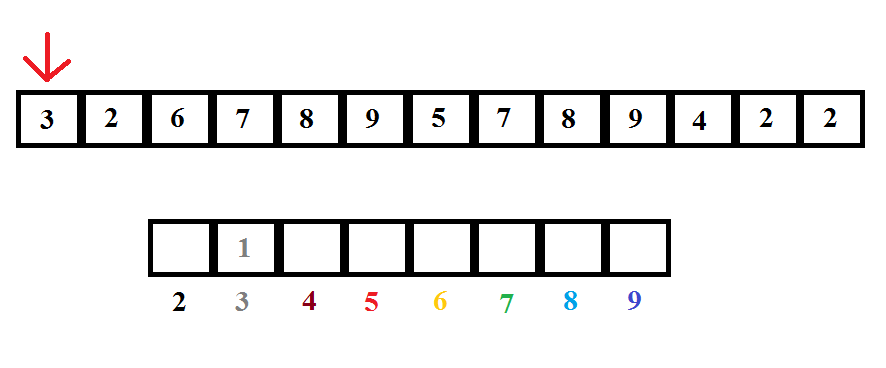
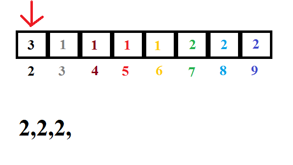

Sortowanie przez zliczanie
Aby posortować przez zliczanie musimy:
1.Znaleźć największy i najmniejszy elemnt zbioru
2.Stworzyć dodatkową tablice liczników o wielkości różnicy między najmniejszym a największym elementem + 1
3.Po kolei zliczyć każde wystąpienie danego elementu i zapisać ich ilość w tablicy licznków
4.Stworzyć posortowaną tablice złożoną z każdego elementu wyświetlonego tyle razy ile jego wystąpień zapisano w tablicy liczników
Przykład:

Zgodnie z zasadą tworzymy tablicę liczników od 2 do 9 i liczymy wystąpienie każdej liczby.
Po czym na pokolei wypisujemy wszystkie liczby zgodnie z kolejnością i otrzymujemy posortowaną tablice.

Wady:
-Ze względu na tworzenie dodatkowej tablicy całego przedziału liczb sortowanie jest praktycznie bezużytyeczne w przypadku sortowania liczb zmienno przecinkowych.
Dla liczb 0.00001, 0.2, 0.003 tablica liczników będzie miała 100000 elementów. Co wobec wielkości tablicy n=3 jest wynikiem tragicznym.
-To samo dotyczy liczb całkowitych z dużym rozstrzałem wartości.
Zalety:
-Złożoność N+M gdzie M to rozmiar tablicy pomocniczej deklasyfikuje inne algorytmy w przypadku dużych zbiorów o małym przedziale liczb.